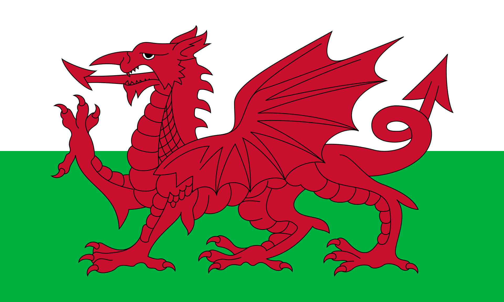

Cymraeg vs English
An exploration of Cymraeg(Welsh) vs English
in Cymru(Wales) from 2011-2021

What are instructional mediums?
English Medium: Classes are taught exclusively in English
Welsh Medium: Classes are taught exclusively in Welsh
Dual Stream: Students choose to learn in Welsh or English
English with Significant Welsh: At least 20% but less than half of classes are taught in Welsh
Transitional: Students start out learning in primarily Welsh and transition to more English over time
A Brief History
The Welsh language has a complex history marked by periods of oppression, particularly from the 16th century onwards.
During the Tudor period, the Laws in Wales Acts made English the sole language of the court system, education, and
government in Wales, reducing the status of Welsh as the primary language of the land. The Industrial Revolution further
exacerbated language decline, as English-speaking migrants flooded into Welsh coal mines and factories, leading to a
significant shift in demographics. Education was conducted entirely in English until well into the 20th century, with
students being beaten or made to wear a “Welsh Not” if caught speaking Welsh. Despite these challenges, the late 20th
century witnessed a language revival. The establishment of Welsh-medium schools, the promotion of Welsh in media and
culture, and the passing of the Welsh Language Act (1993) helped to protect and promote the language. Today, Welsh is
recognized as a vital element of Welsh identity, with significant efforts focused on revitalization and integration into daily life.